花粉景深融合实拍对照
2026 年 11 月 26 日 · 8 个采集日期 · 10 个视野 · 296 张原图 · 4096 × 3000
耗时与视野覆盖
Helicon 中位数 3.25 秒，focus-stack 中位数 17.50 秒。配对耗时比中位数为 5.4 倍。
| 视野 | 焦层 | Helicon 秒 | focus-stack 秒 | 峰值 RSS MiB（旧 / 新） | Helicon 尺寸及原图面积占比 | focus-stack 尺寸及原图面积占比 |
|---|---|---|---|---|---|---|
| 10-29 · 102002 · #061 | 30 | 3.72 | 18.66 | 2096 / 3634 | 4080 × 2990 · 99.28% | 4090 × 2996 · 99.72% |
| 10-29 · 144803 · #061 | 30 | 3.94 | 17.58 | 1957 / 4166 | 4082 × 2988 · 99.26% | 4088 × 2998 · 99.74% |
| 10-30 · 140410 · #004 | 26 | 3.34 | 15.92 | 1816 / 3478 | 4070 × 2988 · 98.97% | 4068 × 2983 · 98.75% |
| 11-03 · 132342 · #061 | 30 | 3.34 | 17.56 | 1918 / 3896 | 4084 × 2990 · 99.37% | 4091 × 2995 · 99.71% |
| 11-04 · 134536 · #061 | 30 | 2.77 | 17.58 | 2166 / 4196 | 4076 × 2984 · 98.98% | 4090 × 2998 · 99.79% |
| 11-05 · 163242 · #061 | 30 | 2.67 | 17.39 | 2059 / 3769 | 4086 × 2992 · 99.49% | 4092 × 2997 · 99.80% |
| 11-06 · 163002 · #016 | 30 | 2.78 | 17.44 | 2165 / 4081 | 4078 × 2990 · 99.23% | 4079 × 2992 · 99.32% |
| 11-11 · 132610 · #076 | 30 | 3.30 | 17.61 | 2201 / 4428 | 4080 × 2994 · 99.41% | 4090 × 2996 · 99.72% |
| 11-13 · 104731 · #001 | 30 | 3.20 | 17.33 | 2165 / 3468 | 4080 × 2982 · 99.01% | 4096 × 3000 · 100.00% |
| 11-13 · 104731 · #031 | 30 | 3.16 | 17.02 | 2094 / 3488 | 4088 × 2988 · 99.41% | 4091 × 2996 · 99.74% |
10-29 · 102002 · #061
30 层 · 文件名 Z -20 至 +38 · 较暗的绿色颗粒

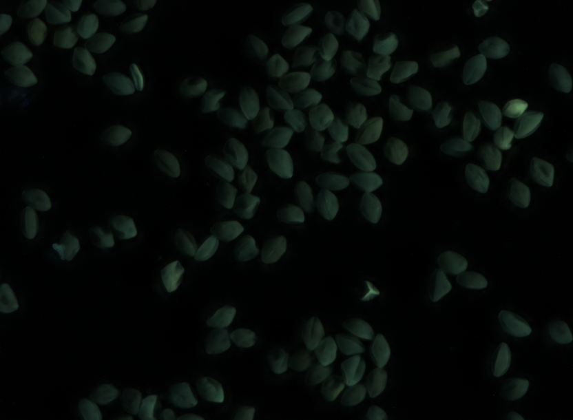

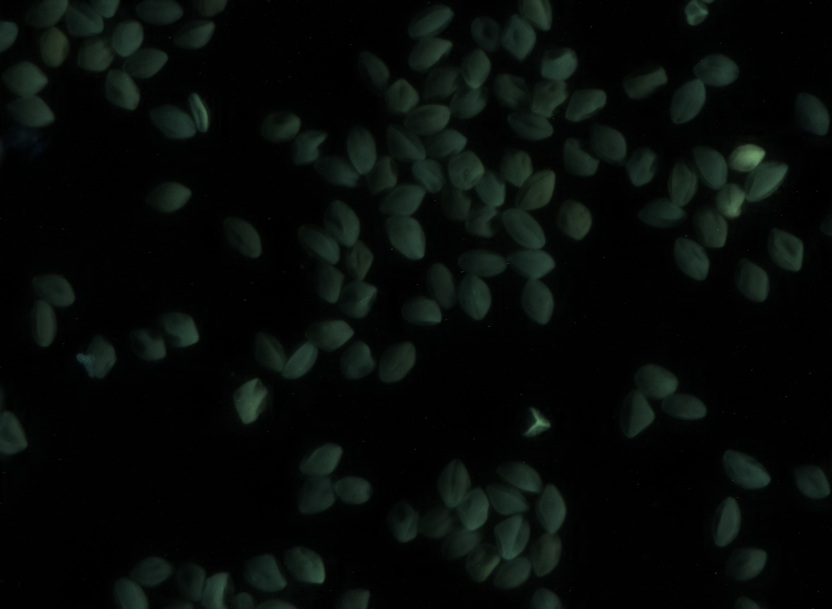
局部 1 右侧椭圆颗粒的斜向明暗边界在 Helicon 图中更容易辨认。focus-stack 背景颗粒感更强，左侧可见小亮点。
局部 1 · 384 × 288 原生像素

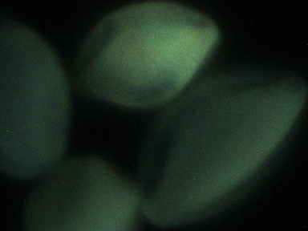

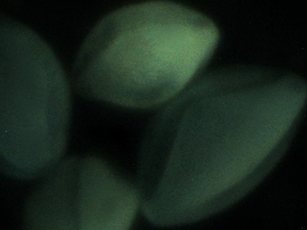

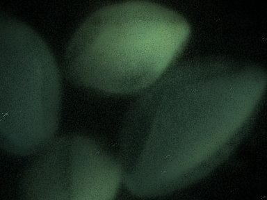
局部测量
| 图像 | 局部相关系数 | Tenengrad | 拉普拉斯方差 | 平均亮度 | 背景噪声估计 |
|---|---|---|---|---|---|
| 原始焦层局部 Z=+2 | 0.996 | 331.01 | 55.35 | 34.39 | 0.33 |
| Helicon B 8/4 | — | 295.30 | 34.48 | 33.16 | 0.33 |
| focus-stack 默认 | 0.995 | 715.17 | 217.90 | 38.37 | 1.66 |
局部 2 · 384 × 288 原生像素


局部测量
| 图像 | 局部相关系数 | Tenengrad | 拉普拉斯方差 | 平均亮度 | 背景噪声估计 |
|---|---|---|---|---|---|
| 原始焦层局部 Z=+2 | 0.995 | 218.91 | 36.71 | 25.35 | 0.66 |
| Helicon B 8/4 | — | 193.10 | 24.08 | 24.53 | 0.66 |
| focus-stack 默认 | 0.995 | 521.97 | 154.78 | 27.86 | 1.99 |
10-29 · 144803 · #061
30 层 · 文件名 Z -20 至 +38 · 密集黄绿色颗粒

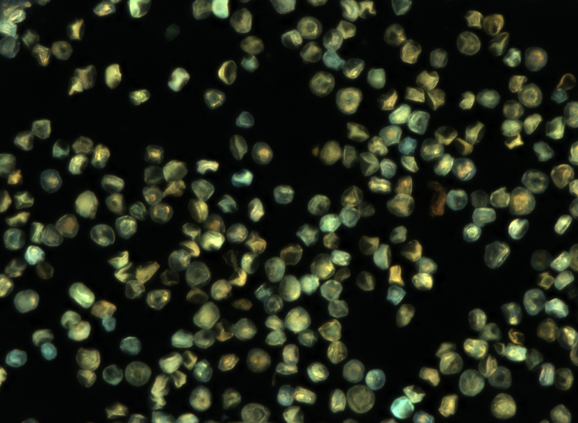

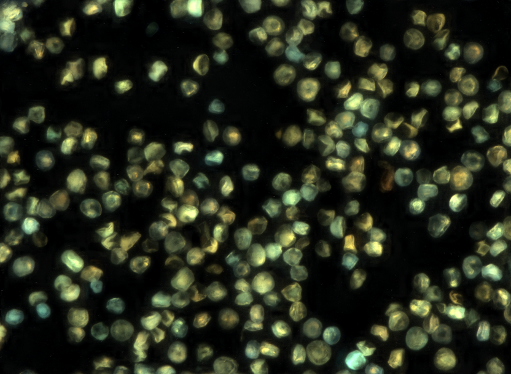
局部 1 中央黄亮区域在 focus-stack 图中更亮，周围背景颗粒感更明显。Helicon 中央颗粒的轮廓与原始焦层更接近。
局部 1 · 384 × 288 原生像素

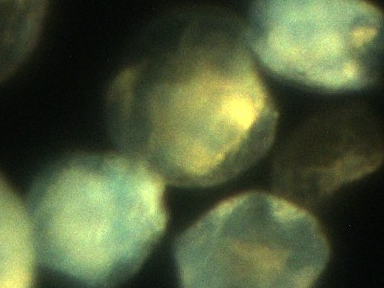

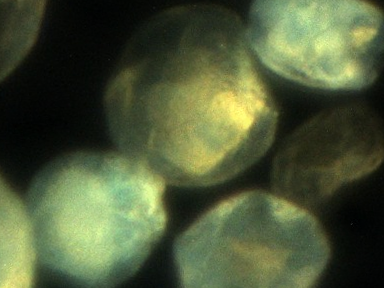

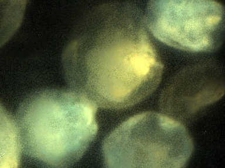
局部测量
| 图像 | 局部相关系数 | Tenengrad | 拉普拉斯方差 | 平均亮度 | 背景噪声估计 |
|---|---|---|---|---|---|
| 原始焦层局部 Z=-4 | 0.997 | 1319.12 | 158.88 | 84.06 | 0.66 |
| Helicon B 8/4 | — | 1353.58 | 94.05 | 81.29 | 0.66 |
| focus-stack 默认 | 0.993 | 2556.45 | 689.23 | 93.28 | 2.65 |
局部 2 · 384 × 288 原生像素


局部测量
| 图像 | 局部相关系数 | Tenengrad | 拉普拉斯方差 | 平均亮度 | 背景噪声估计 |
|---|---|---|---|---|---|
| 原始焦层局部 Z=-2 | 0.996 | 766.69 | 90.78 | 49.37 | 0.66 |
| Helicon B 8/4 | — | 800.69 | 57.16 | 47.41 | 0.66 |
| focus-stack 默认 | 0.992 | 1602.35 | 441.80 | 52.63 | 1.66 |
10-30 · 140410 · #004
26 层 · 文件名 Z -20 至 +30 · 26 层短序列，预览最清晰处接近起始焦层

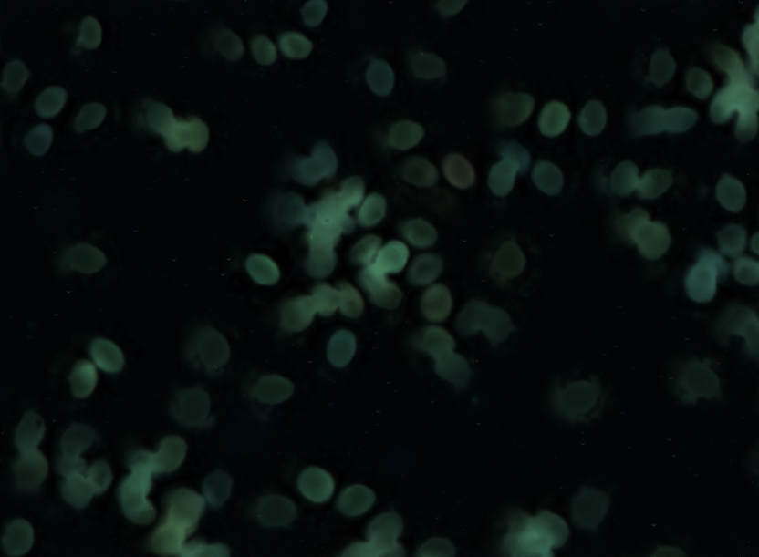

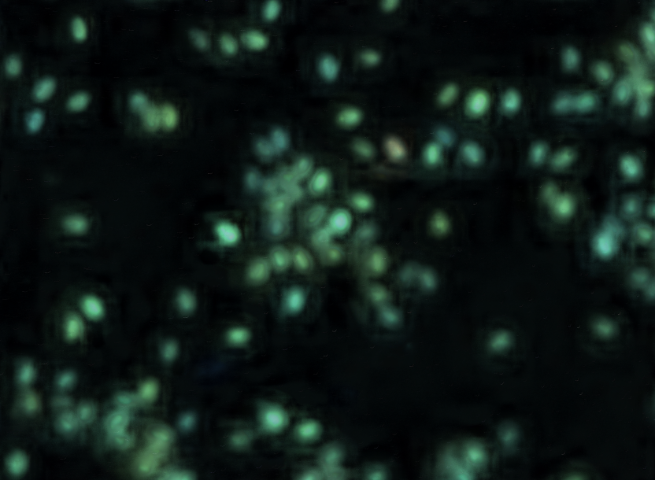
两个局部回选都落在首帧 Z=-20，原片已有显著模糊。Helicon 同一区域较暗，focus-stack 默认图有多处弧形亮点。维持配准的降噪 16 结果仍有弧线，关闭配准后弧线明显减轻。
局部 1 · 384 × 288 原生像素

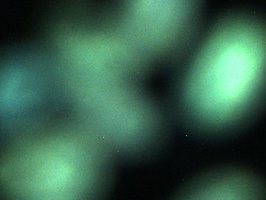

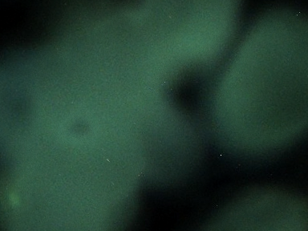

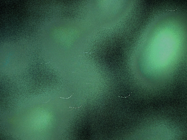
查看降噪与配准补测


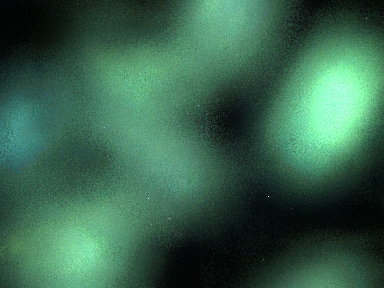
局部测量
| 图像 | 局部相关系数 | Tenengrad | 拉普拉斯方差 | 平均亮度 | 背景噪声估计 |
|---|---|---|---|---|---|
| 原始焦层局部 Z=-20 | 0.725 | 742.35 | 162.10 | 81.87 | 0.66 |
| Helicon B 8/4 | — | 307.84 | 77.37 | 52.89 | 0.66 |
| focus-stack 默认 | 0.770 | 1277.85 | 522.35 | 81.25 | 1.99 |
| 保持配准 · 降噪 16 | 0.771 | 950.76 | 371.54 | 81.34 | 1.99 |
| 关闭配准 · 降噪 16 | 0.732 | 1170.46 | 441.95 | 83.28 | 1.33 |
局部 2 · 384 × 288 原生像素

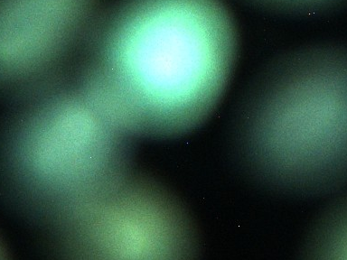

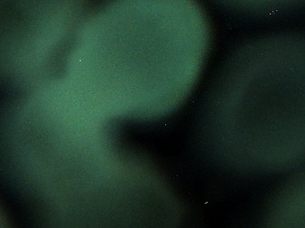

查看降噪与配准补测


局部测量
| 图像 | 局部相关系数 | Tenengrad | 拉普拉斯方差 | 平均亮度 | 背景噪声估计 |
|---|---|---|---|---|---|
| 原始焦层局部 Z=-20 | 0.760 | 702.54 | 145.33 | 76.00 | 0.66 |
| Helicon B 8/4 | — | 325.88 | 76.50 | 45.57 | 0.99 |
| focus-stack 默认 | 0.822 | 1443.88 | 593.71 | 76.40 | 1.66 |
| 保持配准 · 降噪 16 | 0.822 | 1117.03 | 434.27 | 76.47 | 1.66 |
| 关闭配准 · 降噪 16 | 0.768 | 1109.63 | 404.21 | 78.03 | 1.99 |
Helicon B 8/4日志 · focus-stack 默认日志 · 保持配准 · 降噪 16整图预览 · 保持配准 · 降噪 16日志 · 关闭配准 · 降噪 16整图预览 · 关闭配准 · 降噪 16日志 · Helicon 输入、参数和哈希


11-03 · 132342 · #061
30 层 · 文件名 Z -20 至 +38 · 密集、对比度较低

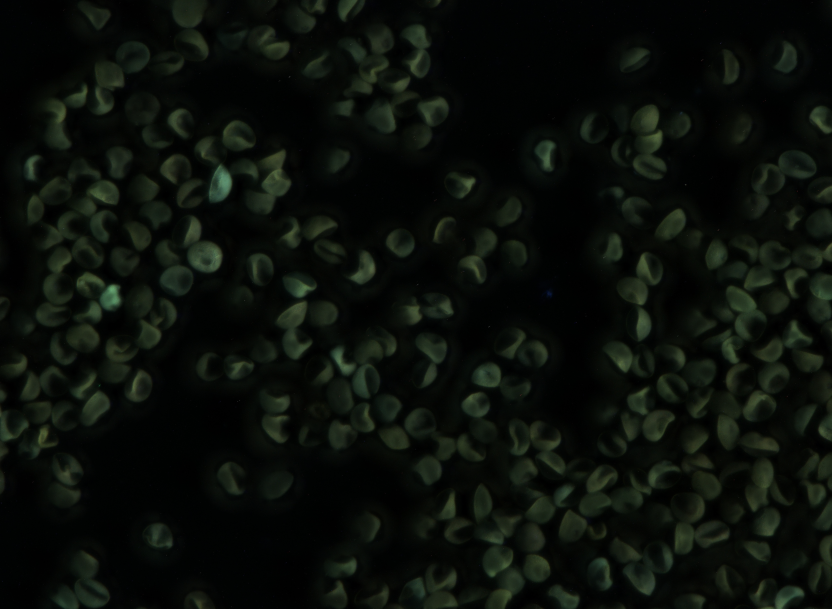

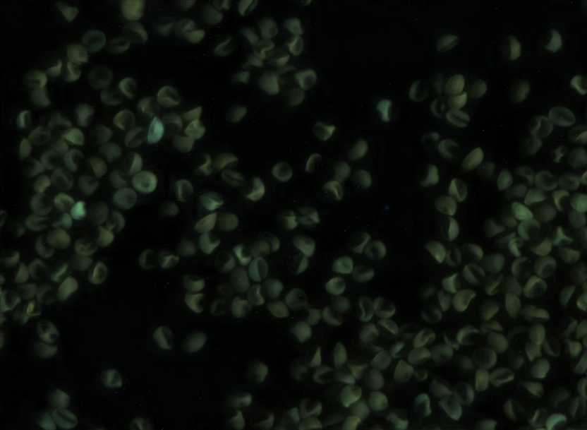
focus-stack 在局部 1 的暗背景生成了多处点状短线。Helicon 中左侧颗粒的低对比边缘较连贯。
局部 1 · 384 × 288 原生像素

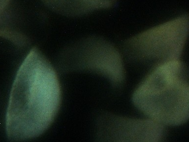

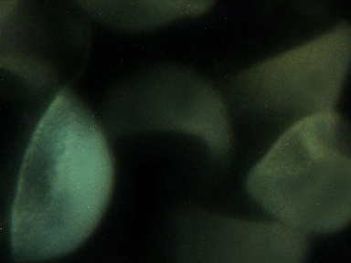

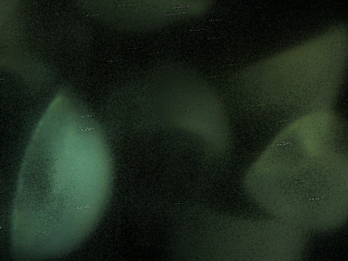
局部测量
| 图像 | 局部相关系数 | Tenengrad | 拉普拉斯方差 | 平均亮度 | 背景噪声估计 |
|---|---|---|---|---|---|
| 原始焦层局部 Z=-14 | 0.993 | 403.47 | 66.20 | 34.01 | 0.66 |
| Helicon B 8/4 | — | 376.11 | 45.45 | 32.61 | 0.66 |
| focus-stack 默认 | 0.988 | 833.93 | 251.08 | 36.59 | 1.99 |
局部 2 · 384 × 288 原生像素

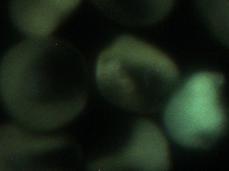

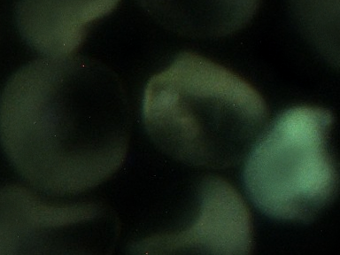

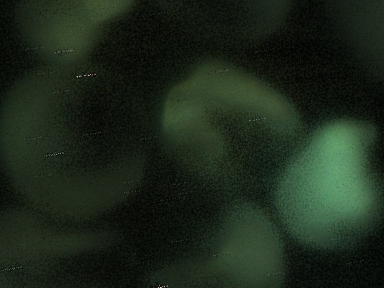
局部测量
| 图像 | 局部相关系数 | Tenengrad | 拉普拉斯方差 | 平均亮度 | 背景噪声估计 |
|---|---|---|---|---|---|
| 原始焦层局部 Z=-10 | 0.986 | 385.44 | 61.47 | 31.53 | 0.66 |
| Helicon B 8/4 | — | 316.72 | 36.48 | 28.83 | 0.66 |
| focus-stack 默认 | 0.979 | 821.75 | 275.80 | 34.96 | 1.66 |
11-04 · 134536 · #061
30 层 · 文件名 Z -20 至 +38 · 密集绿色颗粒及相邻边缘

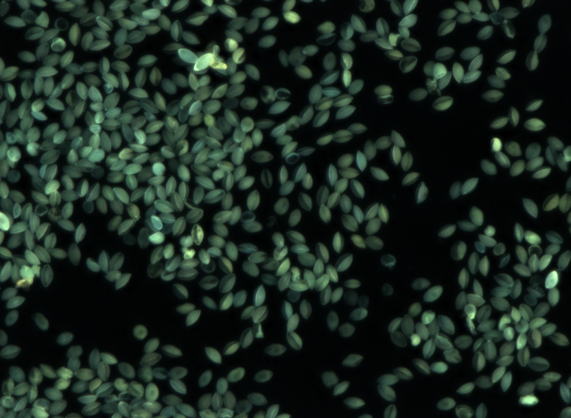

局部 1 右侧椭圆颗粒的边缘及内部明暗带在 Helicon 中更容易分辨。focus-stack 的颗粒噪声也覆盖了邻近暗区。
局部 1 · 384 × 288 原生像素

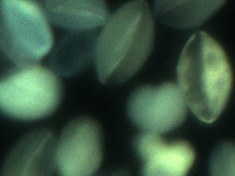

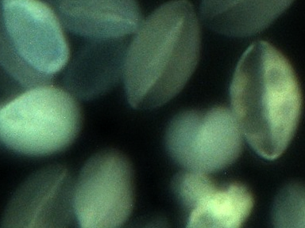

局部测量
| 图像 | 局部相关系数 | Tenengrad | 拉普拉斯方差 | 平均亮度 | 背景噪声估计 |
|---|---|---|---|---|---|
| 原始焦层局部 Z=-2 | 0.997 | 1159.72 | 143.52 | 74.66 | 0.99 |
| Helicon B 8/4 | — | 1174.92 | 96.26 | 72.35 | 0.66 |
| focus-stack 默认 | 0.996 | 2053.27 | 549.59 | 82.34 | 3.32 |
局部 2 · 384 × 288 原生像素

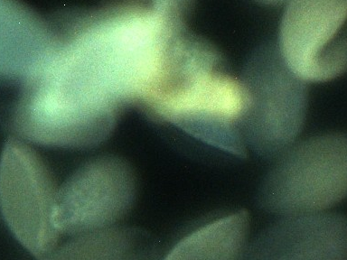

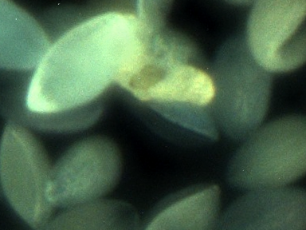

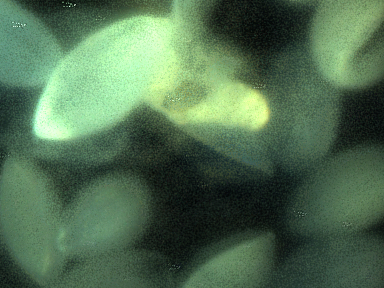
局部测量
| 图像 | 局部相关系数 | Tenengrad | 拉普拉斯方差 | 平均亮度 | 背景噪声估计 |
|---|---|---|---|---|---|
| 原始焦层局部 Z=-4 | 0.988 | 1080.11 | 184.38 | 90.52 | 0.99 |
| Helicon B 8/4 | — | 1299.31 | 110.65 | 87.48 | 0.99 |
| focus-stack 默认 | 0.993 | 2488.13 | 748.10 | 98.34 | 3.98 |
11-05 · 163242 · #061
30 层 · 文件名 Z -20 至 +38 · 稀疏暗颗粒及少量蓝色结构

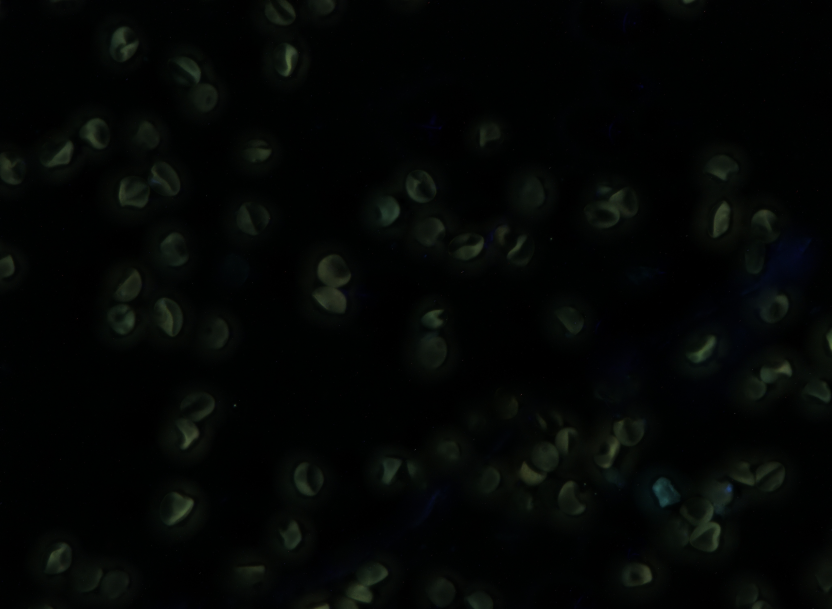

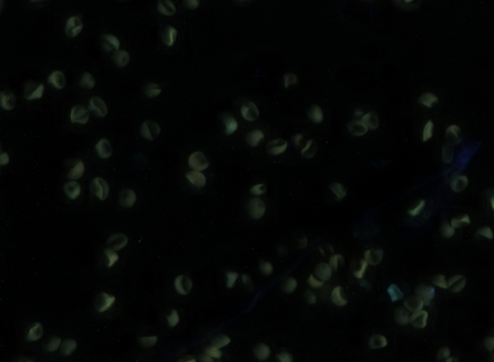
局部 2 两套结果都呈低对比。focus-stack 暗背景可见数处点状亮斑，纹理更粗。
局部 1 · 384 × 288 原生像素

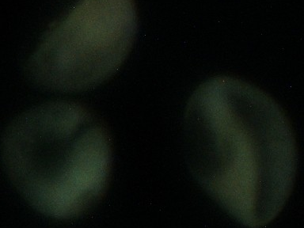

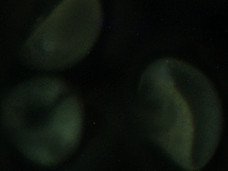

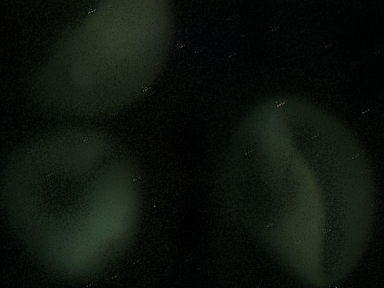
局部测量
| 图像 | 局部相关系数 | Tenengrad | 拉普拉斯方差 | 平均亮度 | 背景噪声估计 |
|---|---|---|---|---|---|
| 原始焦层局部 Z=-10 | 0.940 | 169.75 | 31.20 | 15.74 | 0.33 |
| Helicon B 8/4 | — | 148.33 | 23.23 | 16.37 | 0.66 |
| focus-stack 默认 | 0.939 | 454.20 | 136.53 | 17.34 | 1.33 |
局部 2 · 384 × 288 原生像素

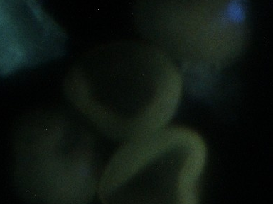

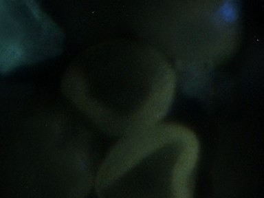

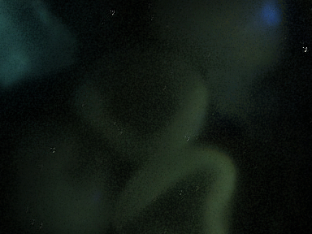
局部测量
| 图像 | 局部相关系数 | Tenengrad | 拉普拉斯方差 | 平均亮度 | 背景噪声估计 |
|---|---|---|---|---|---|
| 原始焦层局部 Z=-16 | 0.958 | 212.85 | 44.77 | 19.52 | 0.33 |
| Helicon B 8/4 | — | 177.32 | 26.29 | 18.86 | 0.66 |
| focus-stack 默认 | 0.958 | 563.81 | 184.66 | 21.99 | 1.66 |
11-06 · 163002 · #016
30 层 · 文件名 Z -20 至 +38 · 高亮青色颗粒与暗背景

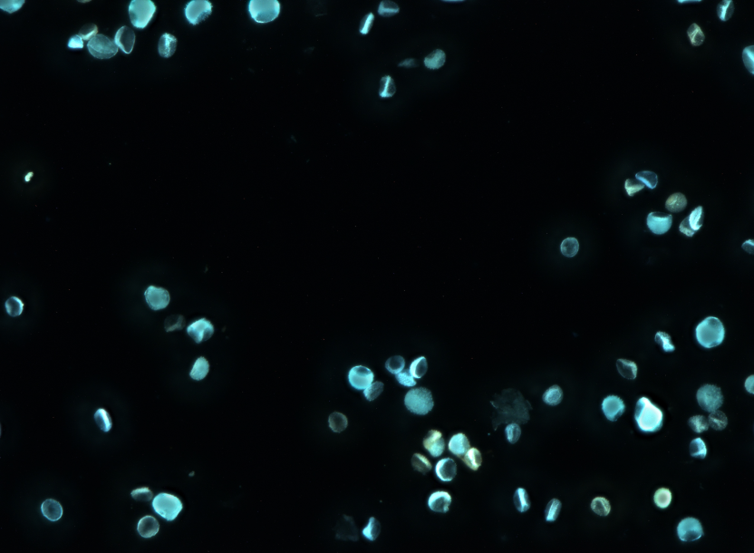

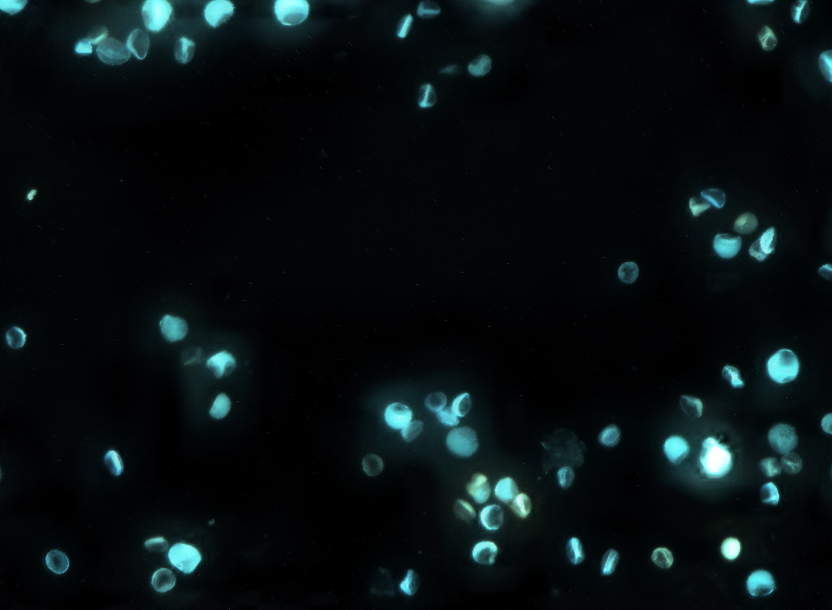
局部 1 的高亮边缘和暗背景中，focus-stack 默认图可见更粗的噪点及短亮痕。关闭配准并设降噪 16 后，背景更接近 Helicon，该设置仍保留了一些颗粒噪点。
局部 1 · 384 × 288 原生像素

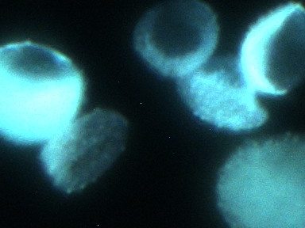

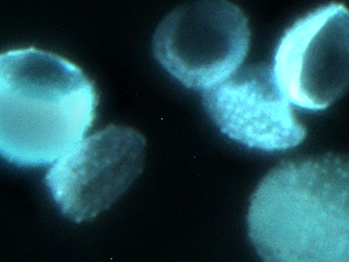

查看降噪与配准补测


局部测量
| 图像 | 局部相关系数 | Tenengrad | 拉普拉斯方差 | 平均亮度 | 背景噪声估计 |
|---|---|---|---|---|---|
| 原始焦层局部 Z=+28 | 0.980 | 1664.09 | 139.68 | 73.34 | 0.66 |
| Helicon B 8/4 | — | 1858.74 | 97.22 | 69.13 | 0.66 |
| focus-stack 默认 | 0.967 | 1820.13 | 460.65 | 81.44 | 2.98 |
| 保持配准 · 降噪 16 | 0.967 | 1515.46 | 331.73 | 81.51 | 2.32 |
| 关闭配准 · 降噪 16 | 0.981 | 1967.81 | 333.18 | 75.50 | 0.99 |
局部 2 · 384 × 288 原生像素


查看降噪与配准补测


局部测量
| 图像 | 局部相关系数 | Tenengrad | 拉普拉斯方差 | 平均亮度 | 背景噪声估计 |
|---|---|---|---|---|---|
| 原始焦层局部 Z=+26 | 0.997 | 1946.22 | 102.10 | 60.93 | 0.66 |
| Helicon B 8/4 | — | 2148.93 | 67.86 | 59.73 | 0.66 |
| focus-stack 默认 | 0.992 | 2244.14 | 448.01 | 67.92 | 1.99 |
| 保持配准 · 降噪 16 | 0.992 | 1893.99 | 292.79 | 67.99 | 1.33 |
| 关闭配准 · 降噪 16 | 0.996 | 2238.08 | 304.83 | 63.76 | 0.66 |
Helicon B 8/4日志 · focus-stack 默认日志 · 保持配准 · 降噪 16整图预览 · 保持配准 · 降噪 16日志 · 关闭配准 · 降噪 16整图预览 · 关闭配准 · 降噪 16日志 · Helicon 输入、参数和哈希


11-11 · 132610 · #076
30 层 · 文件名 Z -20 至 +38 · 高亮青色颗粒密集


局部 1 靠上的圆粒表面点状结构及右下颗粒外缘，在 Helicon 中与原始焦层更一致。focus-stack 抬高了局部亮度，细纹更容易被噪声盖住。
局部 1 · 384 × 288 原生像素


局部测量
| 图像 | 局部相关系数 | Tenengrad | 拉普拉斯方差 | 平均亮度 | 背景噪声估计 |
|---|---|---|---|---|---|
| 原始焦层局部 Z=+14 | 0.996 | 1910.65 | 196.75 | 98.25 | 1.33 |
| Helicon B 8/4 | — | 2243.64 | 130.16 | 96.38 | 1.33 |
| focus-stack 默认 | 0.986 | 2909.16 | 674.63 | 105.89 | 3.98 |
局部 2 · 384 × 288 原生像素


局部测量
| 图像 | 局部相关系数 | Tenengrad | 拉普拉斯方差 | 平均亮度 | 背景噪声估计 |
|---|---|---|---|---|---|
| 原始焦层局部 Z=+14 | 0.996 | 2213.39 | 191.29 | 112.63 | 1.66 |
| Helicon B 8/4 | — | 2499.33 | 122.07 | 110.91 | 1.33 |
| focus-stack 默认 | 0.991 | 3568.09 | 879.63 | 121.77 | 2.32 |
11-13 · 104731 · #001
30 层 · 文件名 Z -20 至 +38 · 近空白背景对照


近空白对照的中心窗口中，Helicon 出现数条细亮线，focus-stack 主要呈现零星亮点。
局部 1 · 384 × 288 原生像素


近空白对照采用中心窗口，背景对比度很低。
局部测量
| 图像 | 局部相关系数 | Tenengrad | 拉普拉斯方差 | 平均亮度 | 背景噪声估计 |
|---|---|---|---|---|---|
| 原始焦层 Z=-20 | — | 51.35 | 30.96 | 1.32 | 0.33 |
| Helicon B 8/4 | — | 212.44 | 63.12 | 1.24 | 0.00 |
| focus-stack 默认 | — | 46.62 | 31.98 | 1.31 | 0.33 |
11-13 · 104731 · #031
30 层 · 文件名 Z -20 至 +38 · 大面积暗背景与少数小颗粒


局部 1 相邻的两颗弱亮样本在 focus-stack 中较暗、边缘更软。Helicon 轮廓更接近回选的 Z=+36 焦层。
局部 1 · 384 × 288 原生像素


局部测量
| 图像 | 局部相关系数 | Tenengrad | 拉普拉斯方差 | 平均亮度 | 背景噪声估计 |
|---|---|---|---|---|---|
| 原始焦层局部 Z=+36 | 0.978 | 298.05 | 50.32 | 18.93 | 0.33 |
| Helicon B 8/4 | — | 269.39 | 31.16 | 20.54 | 0.66 |
| focus-stack 默认 | 0.972 | 395.77 | 114.51 | 17.70 | 0.99 |
局部 2 · 384 × 288 原生像素


局部测量
| 图像 | 局部相关系数 | Tenengrad | 拉普拉斯方差 | 平均亮度 | 背景噪声估计 |
|---|---|---|---|---|---|
| 原始焦层局部 Z=+32 | 0.991 | 185.22 | 34.09 | 7.71 | 0.33 |
| Helicon B 8/4 | — | 191.37 | 25.77 | 9.76 | 0.33 |
| focus-stack 默认 | 0.996 | 228.10 | 63.94 | 6.98 | 0.33 |
复核方法
在 33 个采集批次、3,007 个视野中先预览候选焦层，再对 8 个日期取样，覆盖稀疏、密集、低对比、高亮和近空白。入选视野均使用各自全部焦层。文件名的 SN 数值决定焦层顺序，界面上的 Z 数值取自文件名。
Helicon Focus 8.1.0 按旧日志中的方法 B、半径 8、平滑 4 和有序列表复跑。核对早期复跑的文件头时，发现以 .bmp 命名的成片实际采用 JPEG 编码。本报告改用重跑得到的无压缩 TIFF，并逐张核对文件签名和压缩标签。focus-stack 使用锁定的官方 1.5 发行版、FS_Default、8 线程和批次 8，写出 PNG。
两套实际输入的顺序与 SHA-256 全部相符。计时含进程启动、处理和落盘，暂存和校验另计。日志显示两边均走 CPU 路径。RSS 为进程树的采样峰值。
整图保留各自裁剪。局部窗口先在采集预览焦层上通过纹理选点，再用灰度相关匹配寻找成片对应位置，直接裁取原生像素。局部原片从可匹配焦层中取 Tenengrad 最高的一层。近空白以中心窗口观察。背景噪声估计取自各窗口的低梯度区块。梯度对亮度变化、光晕与噪声也敏感，结合原片和局部外观解读。
预览时发现两张同视野 JPEG 无法解码，保留了路径记录。入选的 296 张均可解码且尺寸一致。
仓库版包含整图预览和直接裁取的原生像素局部。运行记录保存成片的原始尺寸、格式及 SHA-256。
原图索引与 SHA-256 · 逐帧校验 · 备份盘点与抽样问题 · 旧参数来源 · 指标 CSV · ROI 坐标与指标 · 项目测试记录 · 原生实验记录 · 补充参数实验记录